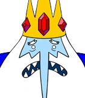

Adventure Time Characters
| Character | Name | Species | Age | Voice Actor | Quote |
|---|---|---|---|---|---|
| Finn Mertens | Human | S1: 12 S10: 17 |
Jeremy Shada | "If Just being born is the greatest act of creation, then what are you supposed to do after that? Ins't everyhting that comes next sort of a dissapointment, slowly entropying until we devolve into a pile of mush?" | |

|
Jake The Dog | Magic animal/Shape-shifter |
S1: 28 S10: 40s |
John DiMaggio | "Dude, sukin' at something is the first step to being sorta good at something." |
Princess Bubblegum (Bonnibel Bubblegum) |
Candy Elemental |
S1: 18 S10: 19 (real age: 800) |
Hynden Walch | "People get built differnet. We don't need to figure it out. We just need to respect it." | |
| BMO | MO robot | about 1000 years old | Niki Yang | "When bad things happen, I know you want to believe they are a joke, But sometimes life is scary and dark. That is why we must find the light." | |
| Marceline | Vampire (vampire queen) | about 1000 years old | Olivia Olson | "Everything repeats over and over again. No one learns anything, because no one lives long enough to see the pattern.” | |
|  | Ice King | Ice Wizard | 1046 years old | Tom Kenny | "I love you too . . . Gunter." |
| Fionna Campbell | Human | S3:15 Fionna and Cake: 30s |
Madeleine Martin | " I knew my life was supposed to be magic!" | |
| The Litch | Primordial Mosnter | Over 1000 years old | Ron Perlman | "You are strong, child, but I am beyond strength. I am the end, and I have come for you, Finn." |